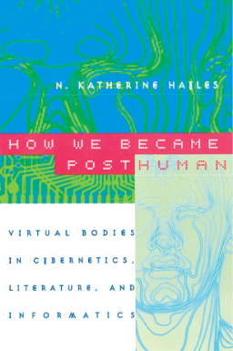
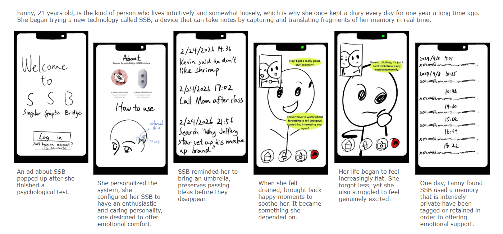
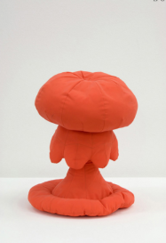
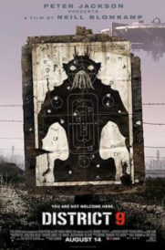
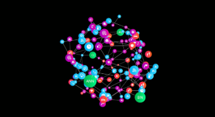
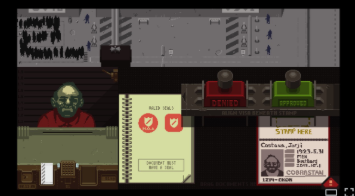

How we became posthuman -N.Katherine.HaylesStay with Me
What if the most unsettling technologies were the ones designed to feel the cutest, safest, and most emotionally comforting?
StoryBoard

Key References

Huggable Atomic Mushroom -Dunne & Raby
District 9(2009)
Can software agents become our digital heirs?
Papers, PleaseTo be continued...